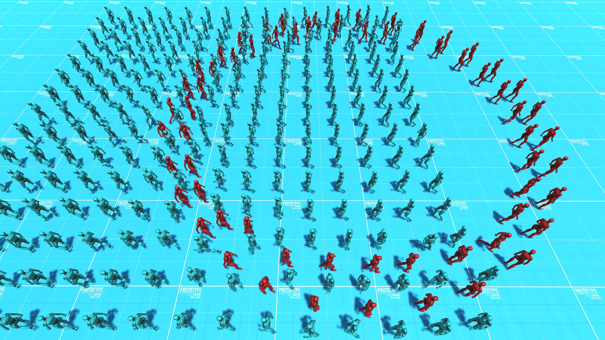

We present a novel method for simulating groups moving in formation. Recent approaches for simulating group motion operate via forces or velocity-connections. While such approaches are effective for several cases, they do not easily scale to large crowds, irregular formation shapes, and they provide limited fine-grain control over agent and group behaviors. In this paper we propose a novel approach that addresses these difficulties via positional constraints, with a position-based dynamics solver. Our approach allows real-time, interactive simulation of a variety of group numbers, formation shapes, and scenarios of up to thousands of agents.
@article{Weiss:Groups:2023,
title = {Fast Position-Based Multi-Agent Group Dynamics},
author = {Weiss, Tomer},
year = {2023},
journal = {Proc. ACM Comput. Graph. Interact. Tech.},
volume = {6},
number = {1},
articleno = {14}
}
This project was in part funded by NJIT facutly research seed grant. We thank Daniel Long of Governor Livingston High School at Berkeley Heights NJ, for his help as a reserach assistant in this project.